数组
数组：按照一定格式排列起来的、具有相同类型的数据元素的集合
- 一维数组：线性表中的数据元素为非结构的简单元素[线性结构，定长的线性表]
声明格式：数据类型 变量名称[长度]；
- 二维数组：一维数组中的数据元素又是一维数组结构
声明格式：数据类型 变量名称[行数] [列数];
- n维数组：n-1维数组中的元素又是一个一维数组结构
数组特点：结构固定-定义后，维数和维界不变
抽象数据类型定义
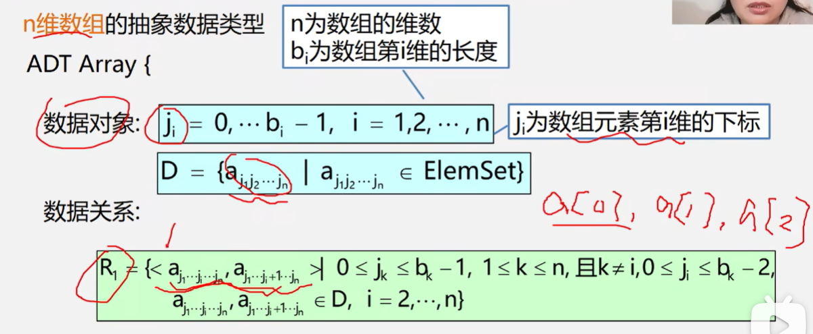
数组的顺序存储
数组可多维，但存储数据元素的内存单元地址是一维的
- 一维数组
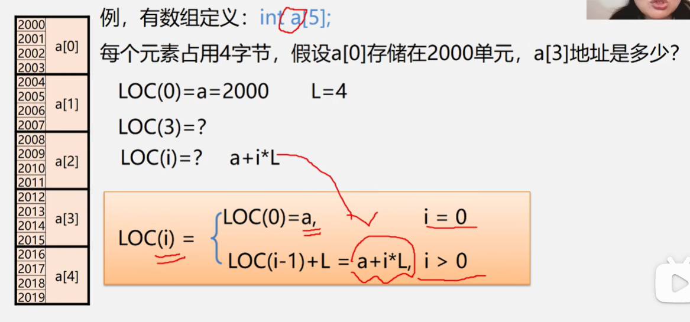
- 二维数组
- 以行序为主序
设数组开始存储位置LOC（0,0），存储每个元素需要L个存储单元
数组元素a[i] [j]的存储位置是：LOC（i,j）=LOC(0,0)+(i n+j) L
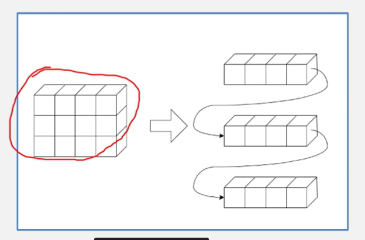
- 以列序为主序
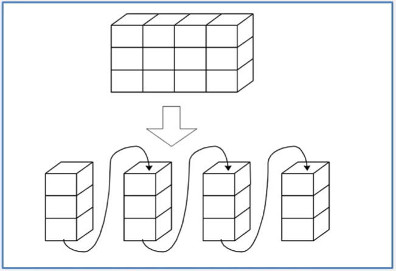
- 以行序为主序
设数组开始存储位置LOC（0,0），存储每个元素需要L个存储单元
数组元素a[i] [j]的存储位置是：LOC（i,j）=LOC(0,0)+(i n+j) L
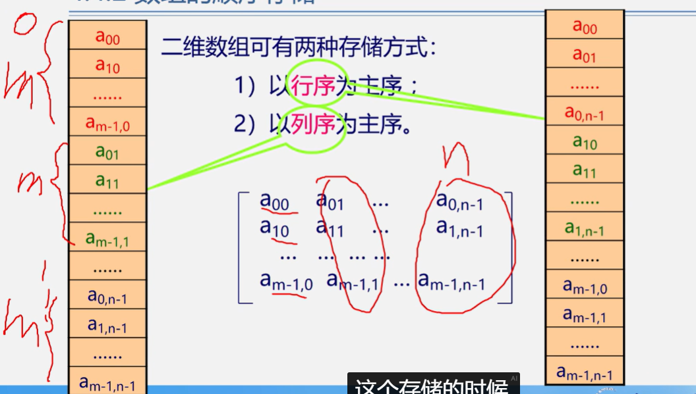
- 三维数组
按页/行/列存放，页优先
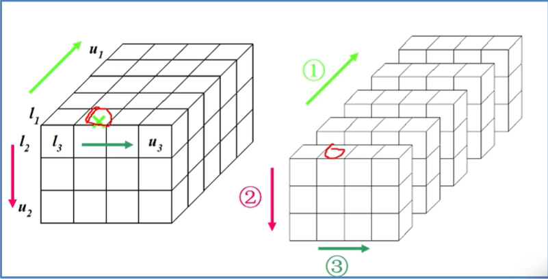
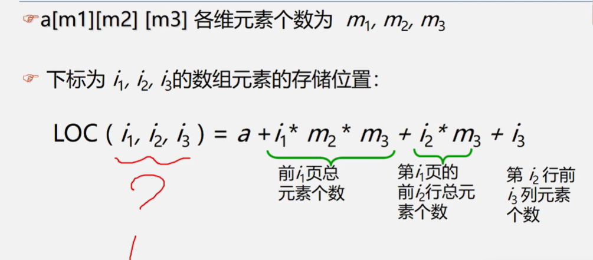
- n维数组
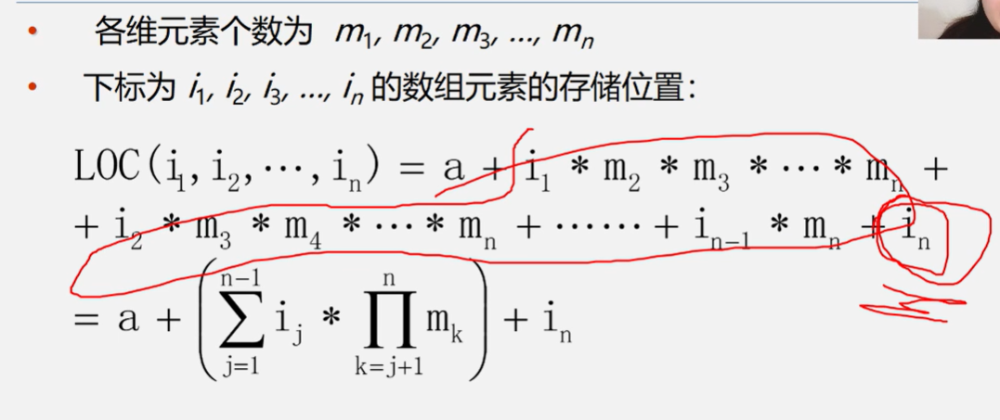
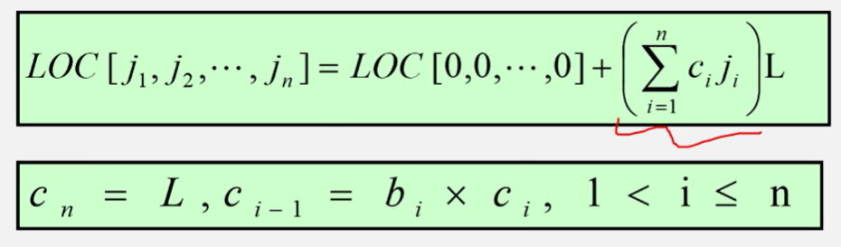
特殊矩阵的压缩存储
- 矩阵：m行n列的表
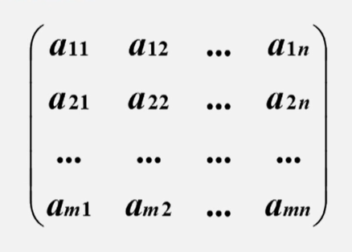
- 矩阵的常规存储：二维数组
特点：随机存取、运算简单、密度为1
不适宜：值相同的元素多 呈规律分布、零元素多
- 矩阵的压缩存储：为多个相同的非零元素只分配一个存储空间、对零元素不分配空间
如：对称矩阵、对角矩阵、三角矩阵、稀疏矩阵[非零元素个数较少（<5%）]
- 对称矩阵：
特点：nn的矩阵中 aij=aji
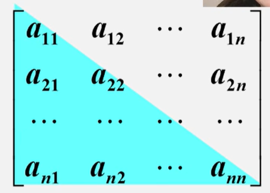
* 存储方法：只存储下|上三角[
- 对称矩阵：
特点：nn的矩阵中 aij=aji
- 三角矩阵：
* 特点：对角线以下|上的数据元素[不包括对角线]全部为常数a
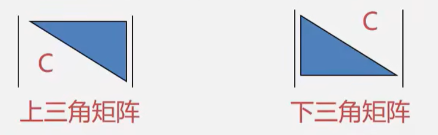
* 存储方法：重复元素c共享一个元素存储空间，共占用$\frac{n(n+1)}{2}$+1个元素空间 - 对角矩阵：
特点：nn方阵中，所有非零元素都集中在对角线带状区域，区域外全为0
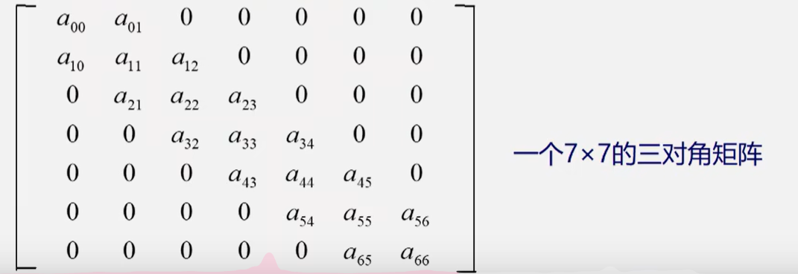
* 存储方法：以对角线的顺序存储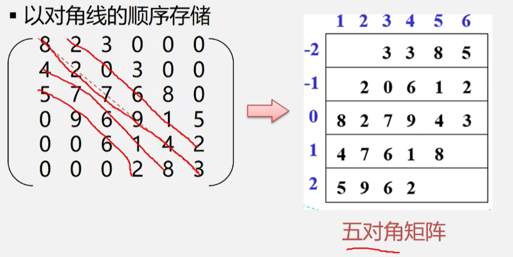
- 稀疏矩阵[超过95%是零元素]： * 顺序存储结构
- 三元组顺序表ijv[有序的双下标法]
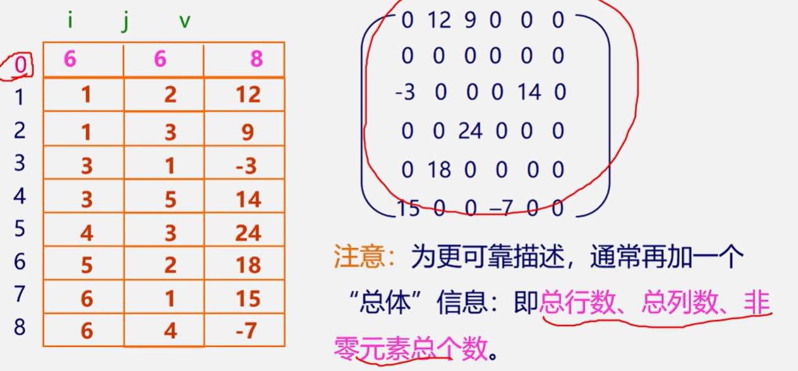
| 优点 | 缺点 |
|---|---|
| 便于进行以行顺序处理的矩阵运算 | 不能随机存取，按行号需从头开始进行查找 |
- 链式存储结构：十字链表
| 优点 |
|---|
| 灵活插入因运算而产生的新非零元素 |
| 删除因运算而产生的新的零元素 |
每一个非零元素用一个结点表示：row、col、value、right[链接同一行的下一个非零元素]、down[链接同一列的下一个非零元素]
| row | col | value |
|---|
| down | right |
|---|
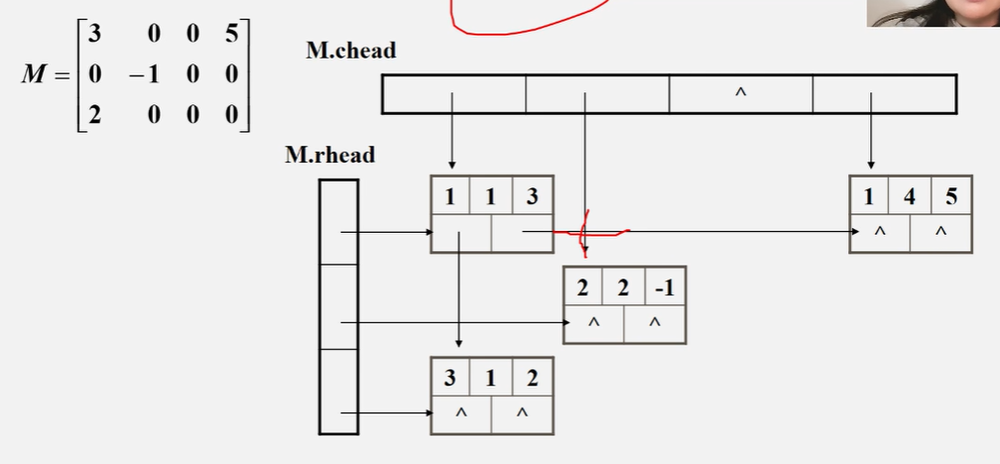